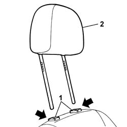
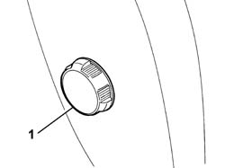
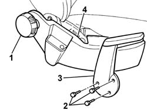
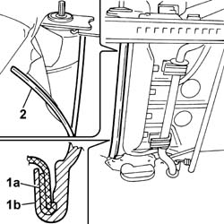
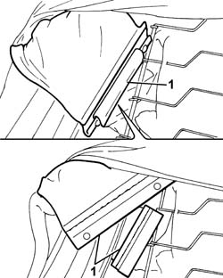
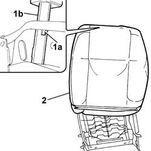
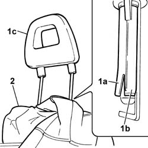
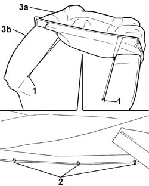
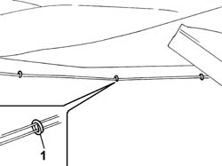

7045D31 Front seat BACKREST COVER, left or right - R.R. with seat removed
- Path
- Procedures > 70 FITTINGS > 7045 FRONT SEATS > 7045D FRONT SEAT COVER/UPHOLSTERY > 7045D31 Front seat BACKREST COVER, left or right - R.R. with seat removed
- Kind
- repair procedure (removal / refitting; the operation number is the code)
- Applies to
- all engines; all production periods
- Interactive page
- https://sloeber94.github.io/elrnDB-fPnd/en/#/2753258
Applies to: all engines; all production periods; only with equipment: Air Bag laterale
 Removing
Removing
 Refitting
Refitting1. Press at the points shown by the arrows to release the head restraint pins from the guide and retaining bushes.
2. Remove the front seat head restraint.

Applies to: all engines; all production periods; only with equipment: Air Bag laterale
1. Using the cutter, remove the lumbar adjustment knob which is a press fit on the backrest lumbar control device.
 | Name | Country |
|---|---|---|
- | Scraper blade | 1.878.077.000 |

Applies to: all engines; all production periods; only with equipment: Air Bag laterale
1. Using a suitable cutter, remove the angle adjustment knob which is a press fit on the control device.
| Name | Country |
|---|---|---|
- | Scraper blade | 1.878.077.000 |
2. Undo the retaining bolts.
3. Remove the driver's seat manual height adjustment control lever.
4. Remove the inner guard from the seat, releasing the inner clips located along the perimeter of the actual guard.

Applies to: all engines; all production periods; only with equipment: Air Bag laterale
Remove the outer seat guard, carrying out the same operations as illustrated for the inner guard, as it is also a press fit and the innter fastening clips are located in the same positions.
1. Release the rods (1a) and (1b) retaining the backrest cover.
2. Start the operation from the side end.
Move the fabric and the upholstery, releasing the lower section and pushing it towards the top of the seat.

Applies to: all engines; all production periods; only with equipment: Air Bag laterale
1. Lift up the cover complete with upholstery in order to gain access to the side bag fabric reinforcement band, then release the two plastic fastening ducts.

Applies to: all engines; all production periods; only with equipment: Air Bag laterale
Lift up the cover in order to gain access to the adjustable head restraint bushes.
1. Press the bush retaining tooth (1a) and remove both bushes (1b) pushing them upwards.
2. Remove the front seat cover complete with upholstery.

Applies to: all engines; all production periods; only with equipment: Air Bag laterale
Lift up the cover until access can be gained to the fixed head restraint bushes.
1. Lift up the lower part (1a) of the bushes (1b) from the head restraint pin and remove the fixed head restraint (1c).
2. Remove the front seat cover complete with upholstery.

Applies to: all engines; all production periods; only with equipment: Air Bag laterale
Place the cover complete with upholstery on a work bench and proceed as described below.
1. Lift up the backrest cover and release the side rods from the retainer on the upholstery.
2. Lift up the centre section of the cover and cut the fastening clips.
3. Separate the backrest cover (3a) from the upholstery (3c).

Applies to: all engines; all production periods
Refitting
RemovingCheck that the cover is intact and that there are no signs of wear or cuts.
Fit the trim to the padding.
1. Using special pliers, attach the new clips located in the front centre section in the area where the cover and the upholstery are joined.
| Name | Country |
|---|---|---|
- | Pliers for metal points | 1.878.017.001 |

Applies to: all engines; all production periods
Fit the cover complete with upholstery on the seat backrest.
Place the cover under the two fixed head restraint guide bushes and adjust the fabric so that there are no creases.
Fit the fixed head restraint pushing it downwards until it is in contact with the guide bushes.
Check that the head restraint does not slip out of the housing.
Lower the cover complete with upholstery.
Applies to: all engines; all production periods; only with equipment: Air Bag laterale
Fit the cover complete with upholstery on the seat backrest.
Fit the two moving head restraint guide bushes and adjust the fabric so that there are no creases.
Check that the bushes do not slip out of the housing in the frame.
Lower the cover complete with upholstery.
Adjust the backrest cover and attach the two ducts fastening the side bag reinforcement band.
Applies to: all engines; all production periods; only with equipment: Air Bag laterale
Adjust the cover in the lower section and unroll the front section inwards.
Fit the backrest cover retaining rods and manually remove any creases in the fabric.
Check the condition of the attachment clips and the inner guard.
Fit the inner guard, which is a press fit, in the housing in the front seat.
Fit the front seat manual height adjustment lever and tighten the fixing bolts.
Check the condition of the engagement teeth inside the knob; if they are worn or damaged, replace the knob.
Fit the angle adjustment knob, press fitting it to the control device.
Check the condition of the attachment clips and the outer guard.
Fit the outer guard, which is a press fit, in the housing in the front seat.
Check the condition of the engagement teeth inside the knob; if they are worn or damaged, replace the knob.
Fit the lumbar adjustment knob, which is a press fit, on the backrest lumbar control device.
Applies to: all engines; all production periods; only with equipment: Air Bag laterale
Fit the front seat head restraint, inserting the pins in the special housings in the bushes, pushing downwards until the pins are secured to the attachment on the bushes.
Check that the head restraint is corretly fitted by raising it and checking that it does not slip out.
Topics that link to this page (9)
- 5580C44 front side bag module one lh or rh r r
- 7045A38 device for driver`s seat squab lumbar adjustment - r r with seat removed
- 7045A39 device for driver`s seat squab lumbar adjustment - r r
- 7045A51 SQUAB LUMBAR REINFORCEMENT ON FRONT SEAT, . (ONE) LEFT or RIGHT - R.R .
- 7045A77 FRAME of SQUAB of one front SEAT with air-bag, height adjustment and lumbar adjustment, left or right - R.R.
- 7045A78 Front seat BACKREST FRAME. (one), left or right - R.R.
- 7045B07 GUIDE BUSH for fixed headrest on one front seat, left or right - R.R.
- 7045B11 FIXED HEADREST of a front seat, left or right - R.R.
- 7045D30 Front seat BACKREST COVER, left or right - R.R.